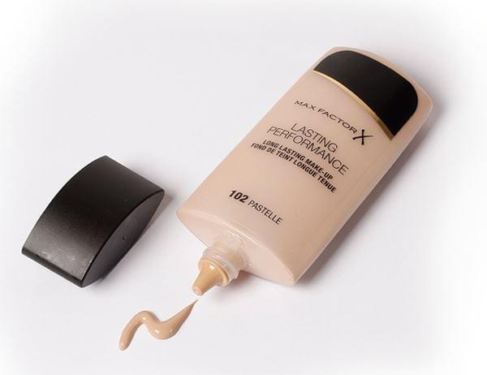

Bases Liquidas

Las bases de maquillaje líquidas son una de las más comunes y habituales, especialmente en el ámbito doméstico y
particular, además de ser también de las más fáciles de utilizar junto a las bases en polvo. Prácticamente todas las marcas
de cosméticos que tenemos a nuestra disposición cuentan, entre su catálogo, con una o varias bases líquidas de maquillaje.
Dentro de este catálogo que presentan los fabricantes de cosméticos podremos encontrar bases líquidas de maquillaje orientadas
Para trabajar sobre pieles grasas se debe evitar utilizar bases de maquillaje líquidas de base aceite, ya que este tipo de
productos favorecerá que la piel genere más grasa obteniendo un aspecto brillante y artificial. Las bases de maquillaje
líquidas orientadas a las pieles grasas presentan el inconveniente de que tras su aplicación se secan bastante más rápido
que otros productos de la gama, por lo que esta característica de debe tener en cuenta a la hora de aplicar posteriormente
otros productos.